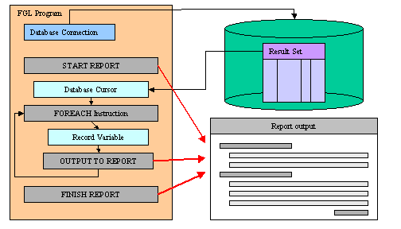

Summary:
See also: Programs, Variables, Result set
A report can arrange and format the data according to your instructions and display the output on the screen, send it to a printer, or store it as a file for future use.
To implement a report, a program must include two distinct components:
The Report Driver retrieves the specified rows from a database, stores their values in program variables, and sends these - one input record at a time - to the Report Routine. After the last input record is received and formatted, the runtime system calculates any aggregate values based on all the data and sends the entire report to some output device.

By separating the two tasks of data retrieval and data formatting, the runtime system simplifies the production of recurrent reports and makes it easy to apply the same report format to different data sets.
The report engine supports the following features:
The report engine supports one-pass reports and two-pass reports. The one-pass requires sorted data to be produced by the report driver in order to handle before/after groups properly. The two-pass record handles sort internally and does not need sorted data from the report driver. During the first pass, the report engine sorts the data and stores the sorted values in a temporary file in the database. During the second pass, it calculates any aggregate values and produces output from data in the temporary files.
For better integration with external tools based on XML standards, Genero BDL introduced the PRINTX instruction to generate XML output from reports.
The purpose of XML-based reports is to sort and group data, not to decorate. Data decoration and formatting can be done by external tools, or you can redirect the XML report output to a SAX Document Handler object to process the output and generate for example HTML pages.
To produce an XML report, you must start the report with the TO XML HANDLER clause in the START REPORT instruction, and then use the PRINTX statement inside the report routine:
01MAIN02...03START REPORT orders_report TO XML HANDLER om.XmlWriter.createFileWriter("orders.xml")04...05END MAIN06REPORT order_report(rec)07...08FORMAT09ON EVERY ROW10PRINTX NAME = order rec.*11...12END REPORT
If all the reports of the program must generate XML output, you can also use the global function fgl_report_set_document_handler().
The generated XML output contains the structure of the formatted pages, with
page header, page trailer and group sections. Every PRINTX instruction will
generate a <Print> node with a list of <Item>
nodes containing the data. The XML processor can use this structure to format
and render the output as needed.
If a new report is started with START REPORT instruction inside a REPORT routine producing XML, and if there is no destination specified in the START REPORT instruction, the sub-report inherits the XML output target of the parent, and sub-report nodes will be merged into the parent XML output.
The output of an XML report will have the following node structure:
<Report ...>
<PageHeader pageNo="...">
...
</PageHeader>
<Group>
<BeforeGroup>
<Print name="...">
<Item name="..." type="..." value="..." isoValue="..." />
<Item name="..." type="..." value="..." isoValue="..." />
...
</Print>
...
</BeforeGroup>
<OnEveryRow>
<Print name="...">
<Item name="..." type="..." value="..." isoValue="..." />
<Item name="..." type="..." value="..." isoValue="..." />
...
</Print>
...
</OnEveryRow>
...
<AfterGroup>
<Print name="...">
<Item name="..." type="..." value="..." isoValue="..." />
<Item name="..." type="..." value="..." isoValue="..." />
...
</Print>
</AfterGroup>
...
</Group>
...
<OnLastRow ...>
...
</OnLastRow>
<PageTrailer ...>
...
</PageTrailer>
</Report>
If PRINTX commands are used inside program flow control instructions like IF, CASE, FOR, FOREACH and WHILE, the XML output will contain additional nodes to identify such conditional print instructions:
<For>
<ForItem>
<Print name="...">
<Item name="..." type="..." value="..." isoValue="..." />
</Print>
...
</ForItem>
...
</For>
<While>
<WhileItem>
<Print name="...">
<Item name="..." type="..." value="..." isoValue="..." />
</Print>
...
</WhileItem>
...
</While>
<Foreach>
<ForeachItem>
<Print name="...">
<Item name="..." type="..." value="..." isoValue="..." />
</Print>
...
</ForeachItem>
...
</Foreach>
<Case>
<When id="position">
<Print name="...">
<Item name="..." type="..." value="..." isoValue="..." />
</Print>
...
</When>
...
</Case>
<If>
<IfThen>
<Print name="...">
<Item name="..." type="..." value="..." isoValue="..." />
</Print>
...
</IfThen>
<IfElse>
<Print name="...">
<Item name="..." type="..." value="..." isoValue="..." />
</Print>
...
</IfElse>
</If>
That information can be useful to process an XML report output.
By default, GROUP aggregate functions such as SUM() return a NULL value if all items values are NULL. You can force the report engine to return a zero decimal value with the following FGLPROFILE setting:
Report.aggregateZero = {true|false}
When this entry is set to true, aggregate functions return zero when all values are NULL.
Default value is : false (Aggregate functions evaluate to NULL if all items are NULL)
The Report Driver retrieves data, starts the report engine and sends the data (as input records) to be formatted by the REPORT routine.
A report driver can be part of the MAIN program block, or it can be in one or more functions.
The report driver typically consists of a loop (such as WHILE, FOR, or FOREACH) with the following statements to process the report:
| Instruction | Description |
| START REPORT | This statement is required to instantiate the report driver. |
| OUTPUT TO REPORT | Provide data for one row to the report driver. |
| FINISH REPORT | Normal termination of the report. |
| TERMINATE REPORT | Cancels the processing of the report. |
A report driver is started by the START REPORT instruction. Once started, data can be provided to the report driver through the OUTPUT TO REPORT statement. To instruct the report engine to terminate output processing, use the FINISH REPORT instruction. To cancel a report from outside the report routine, use TERMINATE REPORT (from inside the report routine, you cancel the report with EXIT REPORT).
In order to handler report interruption, the report driver can check if the INT_FLAG variable is TRUE to stop the loop when the user asked to interrupt the report execution (see example below).
It is possible to execute several report drivers at the same time. It is even possible to invoke a report driver inside a REPORT routine, which is different from the current driver.
The programmer must make sure that the runtime system will always execute these instructions in the following order:
01DATABASE stores702MAIN03DEFINE rcust RECORD LIKE customer.*04DECLARE cu1 CURSOR FOR SELECT * FROM customer05LET int_flag = FALSE06START REPORT myrep07FOREACH cu1 INTO rcust.*08IF int_flag THEN EXIT FOREACH END IF09OUTPUT TO REPORT myrep(rcust.*)10END FOREACH11IF int_flag THEN12TERMINATE REPORT myrep13ELSE14FINISH REPORT myrep15END IF16END MAIN
START REPORT report-name
[ TO to-clause ]
[ WITH dimension-option [,...]
]
{ SCREEN
| PRINTER
| [FILE] filename
| PIPE program [ IN FORM
MODE | IN LINE MODE ]
| XML HANDLER sax-handler-object
| OUTPUT destination-option
}
where destination-option is one of:
{ "SCREEN"
|
"PRINTER"
| "FILE" DESTINATION filename
| "PIPE {
IN FORM MODE | IN LINE MODE }" DESTINATION program
| variable [ DESTINATION { program | filename
} ]
}
where dimension-option is one of:
{
LEFT MARGIN = m-left
| RIGHT MARGIN = m-right
| TOP
MARGIN = m-top
| BOTTOM MARGIN = m-bottom
| PAGE LENGTH = m-length
| TOP OF PAGE = c-top
}
SCREEN, PRINTER, FILE,
PIPE, PIPE IN LINE MODE, PIPE IN FORM
MODE. If PRINTER is specified, the
DBPRINT environment
variable specifies which printer. 01DEFINE file_name VARCHAR(200), page_size INTEGER02...03START REPORT myrep04TO FILE file_name05WITH PAGE LENGTH = page_size
START REPORT typically precedes a loop instruction such as FOR, FOREACH, or WHILE in which OUTPUT TO REPORT feeds the report routine with data. After the loop terminates, FINISH REPORT completes the processing of the output.
The TO clause can be used to specify a destination for output. If you omit the TO clause, the Genero runtime system sends report output to the destination specified in the REPORT definition. If the REPORT routine does not define an OUTPUT clause, the report output is sent by default to the report viewer when in GUI mode, or to the screen when in TUI mode.
Report output can be specified dynamically as follows:
The TO PIPE option can specify the program as a character variable that is assigned at runtime.
The TO OUTPUT option can specify the report output with a string expression, described later in detail.
The SCREEN option specifies that output is to the report window. The way the report is displayed to the end user depends on whether you are in TUI mode or GUI mode. In TUI mode, the report output displays to the terminal screen. In GUI mode, the report output displays in a dedicated popup window called the Report Viewer.
The PRINTER option instructs the runtime system to output the report to the device or program defined by the DBPRINT environment variable.
When using the FILE option, you can specify a file name as the report destination. Output will be sent to the specified file. If the file exists, its content will be overwritten by the new report output. Note that the FILE keyword is optional, but it's best to include it to make your code more readable.
The PIPE option defines a program, shell script, or command line to which the report output must be sent, using the standard input channel. When using the TUI mode, you can use the IN [LINE|FORM] MODE option to specify whether the program is in line mode or in formatted mode when report output is sent to a pipe. See screen modes for more details.
The TO OUTPUT option allows you to specify one of the above output
options dynamically at runtime. The character string expression must be one
of: "SCREEN", "PRINTER", "FILE",
"PIPE", "PIPE IN LINE MODE", " PIPE IN FORM
MODE". If the expression specifies "FILE"
or "PIPE", you can also specify a filename or program
in a character variable following the DESTINATION keyword.
The XML HANDLER option indicates that the report output will be generated as XML and re-directed to a SAX-document handler. When using XML output, the report result can be shown in the Genero Report Engine installed on the front-end workstation. See XML output for more details.
The WITH clause defines the dimensions of each report page and the left, top, right and bottom margins. The values corresponding to a margin and page length must be valid integer expressions. The margins can be defined in any order, but a comma "," is required to separate two page dimensions options.
The RIGHT MARGIN clause defines the total number of characters in each line of output, including the left margin. If you omit this but specify FORMAT EVERY ROW, the default is 132.
The TOP MARGIN clause specifies how many blank lines appear above the first line of text on each page of output. The default is 3.
The BOTTOM MARGIN clause specifies how many blank lines follow the last line of output on each page. The default is 3.
The PAGE LENGTH clause specifies the total number of lines on each page, including data, the margins, and any page headers or page trailers from the FORMAT section. The default page length is 66 lines.
In addition to the page dimension options, the TOP OF PAGE clause can specify a page-eject sequence for a printer. On some systems, specifying this value can reduce the time required for a large report to produce output, because SKIP TO TOP OF PAGE can substitute this value for multiple linefeeds.
OUTPUT TO REPORT report-name ( parameters )
The OUTPUT TO REPORT instruction feeds the Report Routine with a single set of data values (called an input record), which corresponds usually to one printed line in the report output.
An input record is the ordered set of values returned by the expressions that you list between the parentheses following the report name in the OUTPUT TO REPORT statement. The specified values are passed to the report routine, as part of the input record. The input record typically corresponds to a retrieved row from the database. The set of values is usually grouped in a RECORD variable and best practice is to define a User Type in order to ease the variable definitions required in the code implementing the report driver and the report routine definition, for example:
01SCHEMA stores02TYPE t_cust RECORD LIKE customer.*03...04DEFINE r_cust t_cust05...06OUTPUT TO REPORT cust_report(r_cust.*)07...08REPORT cust_report(r)09DEFINE r t_cust10...
You typically include the OUTPUT TO REPORT statement within a WHILE, FOR, or FOREACH loop, so that the program passes data to the report one input record at a time. The next example uses a FOREACH loop to fetch data from the database and pass it as input record to a report:
01SCHEMA stores02DEFINE o LIKE orders.*03...04DECLARE order_c CURSOR FOR05SELECT orders.*06FROM orders ORDER BY ord_cust07START REPORT order_list08FOREACH order_c INTO o.*09OUTPUT TO REPORT order_list(o.*)10END FOREACH11FINISH REPORT order_list12...
Special consideration should be taken regarding row ordering with reports: For example if the report groups rows with BEFORE GROUP OF and/or AFTER GROUP OF sections, the rows must be ordered by the column specified in these sections, and rows should preferably be ordered by the report driver to avoid two-pass reports.
If OUTPUT TO REPORT is not executed, none of the control blocks of the report routine are executed, even if the program also includes the START REPORT and FINISH REPORT statements.
FINISH REPORT report-name
FINISH REPORT closes the report driver. Therefore, it must be the last statement in the report driver and must follow a START REPORT statement that specifies the name of the same report.
FINISH REPORT does the following:
TERMINATE REPORT report-name
TERMINATE REPORT cancels the report processing. It is typically used when the program (or the user) becomes aware that a problem prevents the report from producing part of its intended output, or when the user interrupted the report processing.
TERMINATE REPORT has the following effects:
The EXIT REPORT instruction has the same effect, except that it can be used inside the report definition.
[PUBLIC|PRIVATE] REPORT report-name (argument-list)
[ define-section ]
[ output-section ]
[ sort-section ]
[ format-section ]
END REPORT
where define-section is:
DEFINE variable-definition [,...]
where output-section is:
OUTPUT
[
REPORT TO
{
SCREEN
| PRINTER
| [ FILE ] filename
| PIPE program [ IN FORM
MODE | IN LINE MODE ]
}
]
[
[ WITH ]
[ LEFT MARGIN m-left ]
[ RIGHT MARGIN m-right
]
[ TOP
MARGIN m-top ]
[ BOTTOM MARGIN m-bottom ]
[ PAGE LENGTH m-length ]
[ TOP OF PAGE c-top ]
]
where sort-section is:
ORDER [ EXTERNAL ] BY report-variable [,...]
where format-section is:
FORMAT EVERY ROW
or:
FORMAT
control-block
[ report-only-fgl-statement | sql-statement |
report-statement ]
[...]
[...]
where control-block can be one of:
{
[ FIRST ] PAGE HEADER
| ON EVERY ROW
| BEFORE GROUP OF report-variable
| AFTER GROUP OF report-variable
| PAGE TRAILER
| ON LAST ROW
}
The report definition formats input records. Like the FUNCTION or MAIN statement, it is a program block that can be the scope of local variables. It is not, however, a function; it is not reentrant, and CALL cannot invoke it. The report definition receives data from its driver in sets called input records. These records can include program records, but other data types are also supported. Each input record is formatted and printed as specified by control blocks and statements within the report definition. Most statements and functions can be included in a report definition, and certain specialized statements and operators for formatting output can appear only in a report definition.
Like MAIN or FUNCTION, the report definition must appear outside any other program block. It must begin with the REPORT statement and must end with the END REPORT keywords.
Warning: Some statements are prohibited in a REPORT routine control block. For example, it is not possible to use CONSTRUCT, INPUT, DEFER, DEFINE, REPORT, RETURN instructions in a control block of a report.
By default, report routines are public; They can be called by any other module of the program. If a report routine is only used by the current module, you may want to hide that routine to other modules, to make sure that it will not be called by mistake. To keep a report routine local to the module, add the PRIVATE keyword before the report header. Private report routines are only hidden to external modules, all function of the current module can still call local private report routines.
The define-section declares the data types of local variables used within the report, and of any variables (the input records) that are passed as arguments to the report by the calling statement. Reports without arguments or local variables do not require a DEFINE section.
The output-section can set margin and page size values, and can also specify where to send the formatted output. Output from the report consists of successive pages, each containing a fixed number of lines whose margins and maximum number of characters are fixed.The sort-section specifies how the rows have to be sorted. The specified sort order determines the order in which the runtime system processes any GROUP OF control blocks in the FORMAT section.
The format-section is required. It specifies the appearance of the report, including page headers, page trailers, and aggregate functions of the data. It can also contain control blocks that specify actions to take before or after specific groups of rows are processed. (Alternatively, it can produce a default report by only specifying FORMAT EVERY ROW).
The syntax of the report DEFINE section is the same as for the DEFINE statement, except that you cannot define arrays or array members for records.
This section declares a data type for each formal argument in the REPORT prototype and for any additional local variables that can be referenced only within the REPORT program block. The DEFINE section is required if you pass arguments to the report or if you reference local variables in the report.
For declaring local report variables, the same rules apply to the DEFINE section as to the DEFINE statement in MAIN and FUNCTION program blocks. There are some differences and exceptions, however:
Data types of local variables that are not formal arguments are unrestricted. You must include arguments in the report prototype and declare them in the DEFINE section, if any of the following conditions is true:
Aggregates dependent on all records include:
If your report calls an aggregate function, an error might result if any argument of an aggregate function is not also a format argument of the report. You can, however, use global or module variables as arguments of aggregates if the value of the variable does not change while the report is executing.
A report can reference variables of global or module scope that are not declared in the DEFINE section. Their values can be printed, but they can cause problems in aggregates and in BEFORE GROUP OF and AFTER GROUP OF clauses. Any references to non-local variables can produce unexpected results, however, if their values change while a two-pass report is executing.
OUTPUT
[
REPORT TO
{
SCREEN
| PRINTER
| [ FILE ] filename
| PIPE [ IN FORM MODE | IN
LINE MODE ] program
}
]
[
[ WITH ]
[ LEFT MARGIN m-left ]
[ RIGHT MARGIN m-right
]
[ TOP
MARGIN m-top ]
[ BOTTOM MARGIN m-bottom ]
[ PAGE LENGTH m-length ]
[ TOP OF PAGE c-top ]
]
The OUTPUT section can specify the destination and dimensions for output from the report and the page-eject sequence for the printer. If you omit the OUTPUT section, the report uses default values to format each page. This section is superseded by any corresponding START REPORT specifications.
The OUTPUT section can direct the output from the report to a
printer, file, or pipe, and can initialize the page dimensions and margins of
report output. If PRINTER is specified, the
DBPRINT environment
variable specifies which printer.
The START REPORT statement of the report driver can override all of these specifications by assigning another destination in its TO clause or by assigning other dimensions, margins, or another page-eject sequence in the WITH clause.
Because the size specifications for the dimensions and margins of a page of report output that the OUTPUT section can specify must be literal integers, you might prefer to reset these values in the START REPORT statement, where you can use variables to assign these values dynamically at runtime.
This section specifies how the variables of the input records are to be sorted. It is required if the report driver does not send sorted data to the report. The specified sort order determines the order in which the runtime system processes any GROUP OF control blocks in the FORMAT section.
ORDER [ EXTERNAL ] BY report-variable [ DESC |
ASC ] [,...]
The ORDER BY section specifies a sort list for the input records. Include this section if values that the report definition receives from the report driver are significant in determining how BEFORE GROUP OF or AFTER GROUP OF control blocks will process the data in the formatted report output.
If you omit the ORDER BY section, the runtime system processes input records in the order received from the report driver and processes any GROUP OF control blocks in their order of appearance in the FORMAT section. If records are not sorted in the report driver, the GROUP OF control blocks might be executed at random intervals (that is, after any input record) because unsorted values tend to change from record to record.
If you specify only one variable in the GROUP OF control blocks, and the input records are already sorted in sequence on that variable by the SELECT statement, you do not need to include an ORDER BY section in the report.
Specify ORDER EXTERNAL BY if the input records have already been sorted by the SELECT statement used by the report driver. The list of variables after the keywords ORDER EXTERNAL BY control the execution order of GROUP BY control blocks.
Without the EXTERNAL keyword, the report becomes a two-pass report, meaning that the report engine processes the set of input records twice. During the first pass, the report engine sorts the data and stores the sorted values in a temporary table in the database. During the second pass, it calculates any aggregate values and produces output from data in the temporary files.
With the EXTERNAL keyword, the report engine only needs to make a single pass through the data: it does not need to build the temporary table in the database for sorting the data. However, note that if the report routine contains aggregations functions such as GROUP PERCENT(*), the report will become a two-pass report because such aggregation function needs all rows to compute the value.
The DESC or ASC clause defines the sort order.
A report definition must contain a FORMAT section. The FORMAT section determines how the output from the report will look. It works with the values that are passed to the REPORT program block through the argument list or with global or module variables in each record of the report. In a source file, the FORMAT section begins with the FORMAT keyword and ends with the END REPORT keywords.
Default format:
FORMAT
EVERY ROW
Custom format:
FORMAT
control-block
[ report-only-fgl-statement | sql-statement |
report-statement ]
[...]
[...]
where control-block can be one of:
{
[ FIRST ] PAGE HEADER
| ON EVERY ROW
| BEFORE GROUP OF report-variable
| AFTER GROUP OF report-variable
| PAGE TRAILER
| ON LAST ROW
}
The FORMAT section is made up of the following Control Blocks:
If you use the FORMAT EVERY ROW, no other statements or control blocks are valid. The EVERY ROW keywords specify a default output format, including every input record that is passed to the report.
Control blocks define the structure of a report by specifying one or more statements to be executed when specific parts of the report are processed.
If a report driver includes START REPORT and FINISH REPORT statements, but no data records are passed to the report, no control blocks are executed. That is, unless the report executes an OUTPUT TO REPORT statement that passes at least one input record to the report; then neither the FIRST PAGE HEADER control block nor any other control block is executed
Apart from BEFORE GROUP OF and AFTER GROUP OF, each control block must appear only one time.
More complex FORMAT sections can contain control blocks like ON EVERY ROW or BEFORE GROUP OF, which contain statements to execute while the report is being processed. Control blocks can contain report execution statements and other executable statements.
See also statements and report format section.
A control block may invoke most fgl-statements and sql-statements, except those listed in prohibited statements.
The BEFORE/AFTER GROUP OF control blocks can include aggregate functions to instruct the report engine to automatically compute such values.
A report-statement is a statement specially designed for the report format section. It cannot be used in any other part of the program.
The sequence in which the BEFORE GROUP OF and AFTER GROUP OF control blocks are executed depends on the sort list in the ORDER BY section, regardless of the physical sequence in which these control blocks appear within the FORMAT section.
The report engine uses as column headings the names of the variables that the report driver passes as arguments at runtime. If all fields of each input record can fit horizontally on a single line, the default report prints the names across the top of each page and the values beneath. Otherwise, it formats the report with the names down the left side of the page and the values to the right, as in the previous example. When a variable contains a null value, the default report prints only the name of the variable, with nothing for the value.
The following example is a brief report specification that uses FORMAT EVERY ROW. We assume here that the cursor that retrieved the input records for this report was declared with an ORDER BY clause, so that no ORDER BY section is needed in this report definition:
01DATABASE stores70203REPORT simple( order_num, customer_num, order_date )0405DEFINE order_num LIKE orders.order_num,06customer_num LIKE orders.customer_num,07order_date LIKE orders.order_date0809FORMAT EVERY ROW1011END REPORT
The above example would produce the following output:
order_num customer_num order_date
1001 104 01/20/1993
1002 101 06/01/1993
1003 104 10/12/1993
1004 106 04/12/1993
1005 116 12/04/1993
1006 112 09/19/1993
1007 117 03/25/1993
1008 110 11/17/1993
1009 111 02/14/1993
1010 115 05/29/1993
1011 104 03/23/1993
1012 117 06/05/1993
This control block specifies the action that the runtime system takes before it begins processing the first input record. You can use it, for example, to specify what appears near the top of the first page of output from the report.
Because the runtime system executes the FIRST PAGE HEADER control block before generating any output, you can use this control block to initialize variables that you use in the FORMAT section.
If a report driver includes START REPORT and FINISH REPORT statements, but no data records are passed to the report, this control block is not executed. That is, unless the report executes an OUTPUT TO REPORT statement that passes at least one input record to the report, neither the FIRST PAGE HEADER control block nor any other control block is executed.
As its name implies, you can also use a FIRST PAGE HEADER control block to produce a title page as well as column headings. On the first page of a report, this control block overrides any PAGE HEADER control block. That is, if both a FIRST PAGE HEADER and a PAGE HEADER control block exist, output from the first appears at the beginning of the first page, and output from the second begins all subsequent pages.
The TOP MARGIN (set in the OUTPUT section) determines how close the header appears to the top of the page.
Corresponding restrictions also apply to CASE, FOR, IF, NEED, SKIP, PRINT, and WHILE statements in PAGE HEADER and PAGE TRAILER control blocks.
This control block is executed whenever a new page is added to the report. The PAGE HEADER control block specifies the action that the runtime takes before it begins processing each page of the report. It can specify what information, if any, appears at the top of each new page of output from the report.
The TOP MARGIN specification (in the OUTPUT section) affects how many blank lines appear above the output produced by statements in the PAGE HEADER control block.
You can use the PAGENO operator in a PRINT statement within a PAGE HEADER control block to automatically display the current page number at the top of every page.
The FIRST PAGE HEADER control block overrides this control block on the first page of a report.
New group values can appear in the PAGE HEADER control block when this control block is executed after a simultaneous end-of-group and end-of-page situation.
The runtime system delays the processing of the PAGE HEADER control block until it encounters the first PRINT, SKIP, or NEED statement in the ON EVERY ROW, BEFORE GROUP OF, or AFTER GROUP OF control block. This order guarantees that any group columns printed in the PAGE HEADER control block have the same values as the columns printed in the ON EVERY ROW control block.
The PAGE TRAILER control block specifies what information, if any, appears at the bottom of each page of output from the report.
The runtime system executes the statements in the PAGE TRAILER control block before the PAGE HEADER control block when a new page is needed. New pages can be initiated by any of the following conditions:
You can use the PAGENO operator in a PRINT statement within a PAGE TRAILER control block to automatically display the page number at the bottom of every page, as in the following example:
01PAGE TRAILER02PRINT COLUMN 28, PAGENO USING "page <<<<"
The BOTTOM MARGIN specification (in the OUTPUT section) affects how close to the bottom of the page the output displays the page trailer.
The BEFORE/AFTER GROUP OF control blocks specify what action the runtime system takes respectively before or after it processes a group of input records. Group hierarchy is determined by the ORDER BY specification in the SELECT statement or in the report definition.
A group of records is all of the input records that contain the same value for the variable whose name follows the AFTER GROUP OF keywords. This group variable must be passed through the report arguments. A report can include no more than one AFTER GROUP OF control block for any group variable.
When the runtime system executes the statements in a BEFORE/AFTER GROUP OF control block, the report variables have the values from the first / last record of the new group. From this perspective, the BEFORE/AFTER GROUP OF control block could be thought of as the "on first / last record of group" control block.
Each BEFORE GROUP OF block is executed in order, from highest to lowest priority, at the start of a report (after any FIRST PAGE HEADER or PAGE HEADER control blocks, but before processing the first record) and on these occasions:
The runtime system executes the AFTER GROUP OF control block on these occasions:
How often the value of the group variable changes depends in part on whether the input records have been sorted by the SELECT statement:
You can sort the records by specifying a sort list in either of the following areas:
To sort data in the report definition (with an ORDER BY section), make sure that the name of the group variable appears in both the ORDER BY section and in the BEFORE GROUP OF control block.
To sort data in the ORDER BY clause of a SELECT statement, perform the following tasks:
If you specify sort lists in both the report driver and the report definition, the
sort list in the ORDER BY section of the REPORT takes precedence.
When the runtime system starts to generate a report, it first executes the
BEFORE GROUP OF control blocks in descending order of priority before it
executes the ON EVERY ROW control block. If the report is not already at the
top of the page, the SKIP TO TOP OF PAGE statement in a BEFORE GROUP OF
control block causes the output for each group to start at the top of a page.
If the sort list includes more than one variable, the runtime system sorts the records by values in the first variable (highest priority). Records that have the same value for the first variable are then ordered by the second variable and so on until records that have the same values for all other variables are ordered by the last variable (lowest priority) in the sort list.
The ORDER BY section determines the order in which the runtime system processes BEFORE GROUP OF and AFTER GROUP OF control blocks. If you omit the ORDER BY section, the runtime system processes any GROUP OF control blocks in the lexical order of their appearance within the FORMAT section.
If you include an ORDER BY section, and the FORMAT section contains more than one BEFORE GROUP OF or AFTER GROUP OF control block, the order in which these control blocks are executed is determined by the sort list in the ORDER BY section. In this case, their order within the FORMAT section is not significant because the sort list overrides their lexical order.
The runtime system processes all the statements in a BEFORE GROUP OF or AFTER GROUP OF control block on these occasions:
In the AFTER GROUP OF control block, you can include the GROUP keyword to qualify aggregate report functions like AVG(), SUM(), MIN(), or MAX():
01AFTER GROUP OF r.order_num02PRINT r.order_date, 7 SPACES,03r.order_num USING"###&", 8 SPACES,04r.ship_date, " ",05GROUP SUM(r.total_price) USING"$$$$,$$$,$$$.&&"06AFTER GROUP OF r.customer_num07PRINT 42 SPACES, "-------------------"08PRINT 42 SPACES, GROUP SUM(r.total_price) USING"$$$$,$$$,$$$.&&"
Using the GROUP keyword to qualify an aggregate function is only valid within the AFTER GROUP OF control block. It is not valid, for example, in the BEFORE GROUP OF control block.
After the last input record is processed, the runtime system executes the AFTER GROUP OF control blocks before it executes the ON LAST ROW control block.
The ON EVERY ROW control block specifies the action to be taken by the runtime system for every input record that is passed to the report definition.
The runtime system executes the statements within the ON EVERY ROW control block for each new input record that is passed to the report. The following example is from a report that lists all the customers, their addresses, and their telephone numbers across the page:
01ON EVERY ROW02PRINT r.fname, " ", r.lname, " ",03r.address1, " ", r.cust_phone
The runtime system delays processing the PAGE HEADER control block (or the FIRST PAGE HEADER control block, if it exists) until it encounters the first PRINT, SKIP, or NEED statement in the ON EVERY ROW control block.
If a BEFORE GROUP OF control block is triggered by a change in the value of a variable, the runtime system executes all appropriate BEFORE GROUP OF control blocks (in the order of their priority) before it executes the ON EVERY ROW control block. Similarly, if execution of an AFTER GROUP OF control block is triggered by a change in the value of a variable, the runtime system executes all appropriate AFTER GROUP OF control blocks (in the reverse order of their priority) before it executes the ON EVERY ROW control block.
The ON LAST ROW control block specifies the action that the runtime system is to take after it processes the last input record that was passed to the report definition and encounters the FINISH REPORT statement.
The statements in the ON LAST ROW control block are executed after the statements in the ON EVERY ROW and AFTER GROUP OF control blocks if these blocks are present.
When the runtime system processes the statements in an ON LAST ROW control block, the variables that the report is processing still have the values from the final record that the report processed. The ON LAST ROW control block can use aggregate functions to display report totals.
Language statements that have no meaning inside a report definition routine are prohibited. The following table shows some of the statements that are not valid within any control block of the FORMAT section of a REPORT program block:
| CONSTRUCT | FUNCTION | MENU |
| DEFER | INPUT | PROMPT |
| DEFINE | INPUT ARRAY | REPORT |
| DISPLAY ARRAY | MAIN | RETURN |
A compile-time error is issued if you attempt to include any of these statements in a control block of a report. You can call a function that includes some of these statements, but this is not recommended.
The following statements can appear only in control blocks of the FORMAT section of a report definition:
| Statement | Effect |
| EXIT REPORT | Cancels processing of the report from within the report definition. |
| NEED | Forces a page break unless some specified number of lines is available on the current page of the report. |
| PAUSE | Allows the user to control scrolling of screen output (This statement has no effect if output is sent to any destination except the screen.) |
| Appends a specified item to the output of the report. | |
| SKIP | Inserts blank lines into a report or forces a page break. |
When defining a report routine, the report name must immediately follow the REPORT keyword. The name must be unique among function and report names within the program. Its scope is the entire program.
The list of formal arguments of the report must be enclosed in parentheses and separated by commas. These are local variables that store values that the calling routine passes to the report. The compiler issues an error unless you declare their data types in the subsequent DEFINE section. You can include a program record in the formal argument list, but you cannot append the .* symbols to the name of the record. Arguments can be of any data type except ARRAY, or a record with an ARRAY member.
When you call a report, the formal arguments are assigned values from the argument list of the OUTPUT TO REPORT statement. These actual arguments that you pass must match, in number and position, the formal arguments of the REPORT routine. The data types must be compatible, but they need not be identical. The runtime system can perform some conversions between compatible data types.
The names of the actual arguments and the formal arguments do not have to match.
You must include the following items in the list of formal arguments:
The report engine supports one-pass reports and two-pass reports. The one-pass report requires sorted data to be produced by the report driver in order to handle before/after groups properly. The two-pass report handles sorts internally and does not need sorted data from the report driver. During the first pass, the report engine sorts the data and stores the sorted values in a temporary file in the database. During the second pass, it calculates any aggregate values and produces output from data in the temporary files.
A report is defined as a two-pass report if it includes any of the following items:
Two-pass reports create temporary tables. The FINISH REPORT statement uses values from these tables to calculate any global aggregates, and then deletes the tables.
EXIT REPORT
EXIT REPORT cancels the report processing. It must appear in the FORMAT section of the report definition. It is useful after the program (or the user) becomes aware that a problem prevents the report from producing part of its intended output.
EXIT REPORT has the following effects:
You cannot use the RETURN statement as a substitute for EXIT REPORT. An error is issued if RETURN is encountered within the definition of a report.
PRINT
{
expression
| COLUMN left-offset
| PAGENO
| LINENO
| num-spaces SPACES
| [GROUP] COUNT(*) [ WHERE condition ]
| [GROUP] PERCENT(*) [ WHERE condition
]
| [GROUP] AVG( variable ) [ WHERE condition
]
| [GROUP] SUM( variable ) [ WHERE condition
]
| [GROUP] MIN( variable ) [ WHERE condition
]
| [GROUP] MAX( variable ) [ WHERE condition
]
| char-expression WORDWRAP [ RIGHT MARGIN rm ]
| FILE "file-name"
} [,...]
[ ; ]
This statement can include character data in the form of an ASCII file, a TEXT variable, or a comma-separated expression list of character expressions in the output of the report. (For TEXT variable or filename, you cannot specify additional output in the same PRINT statement.) You cannot display a BYTE value. Unless its scope of reference is global or the current module, any program variable in expression list must be declared in the DEFINE section.
The PRINT FILE statement reads the contents of the specified filename into the report, beginning at the current character position. This statement permits you to insert a multiple-line character string into the output of a report. If file-name stores the value of a TEXT variable, the PRINT FILE file-name statement has the same effect as specifying PRINT text-variable. (But only PRINT variable can include the WORDWRAP operator)
PRINT statement output begins at the current character position, sometimes called simply the current position. On each page of a report, the initial default character position is the first character position in the first line. This position can be offset horizontally and vertically by margin and header specifications and by executing any of the following statements:
Unless you use the keyword CLIPPED or USING, values are displayed with widths (including any sign) that depend on their declared data types.
| Data Type | Default Print With |
| BYTE | N/A |
| CHAR | Length of character data type declaration. |
| DATE | DBDATE dependant, 10 if DBDATE = "MDY4/" |
| DATETIME | From 2 to 25, as implied in the data type declaration. |
| DECIMAL | (2 + p + s), where p is the precision and s is the scale from the data type declaration. |
| FLOAT | 14 |
| INTEGER | 11 |
| INTERVAL | From 3 to 25, as implied in the data type declaration. |
| MONEY | (2 + c + p + s), where c is the length of the currency defined by DBMONEY and p is the precision and s is the scale from the data type declaration. |
| NCHAR | Length of character data type declaration. |
| NVARCHAR | Length current value in the variable. |
| SMALLFLOAT | 14 |
| SMALLINT | 6 |
| STRING | Length current value in the variable. |
| TEXT | Length current value in the variable. |
| VARCHAR | Length current value in the variable. |
Unless you specify the FILE or WORDWRAP option, each PRINT statement displays output on a single line. For example, this fragment displays output on two lines:
01PRINT fname, lname02PRINT city, ", ", state, " ", zipcode
If you terminate a PRINT statement with a semicolon, however, you suppress the implicit LINEFEED character at the end of the line. The next example has the same effect as the PRINT statements in the previous example:
01PRINT fname;02PRINT lname03PRINT city, ", ", state, " ", zipcode
The expression list of a PRINT statement returns one or more values that can be displayed as printable characters. The expression list can contain report variables, built-in functions and operators. Some of these can appear only in a REPORT program block such as PAGENO, LINENO, PERCENT.
If the expression list applies the USING operator to format a DATE or MONEY value, the format string of the USING operator takes precedence over the DBDATE, DBMONEY, and DBFORMAT environment variables.
Aggregate report functions summarize data from several records in a report. The syntax and effects of aggregates in a report resemble those of SQL aggregate functions but are not identical.
The expression (in parentheses) that SUM( ), AVG( ), MIN( ), or MAX( ) takes as an argument is typically of a number or INTERVAL data type; ARRAY, BYTE, RECORD, and TEXT are not valid. The SUM( ), AVG( ), MIN( ), and MAX( ) aggregates ignore input records for which their arguments have null values, but each returns NULL if every record has a null value for the argument.
The GROUP keyword is an optional keyword that causes the aggregate function to include data only for a group of records that have the same value for a variable that you specify in an AFTER GROUP OF control block. An aggregate function can only include the GROUP keyword within an AFTER GROUP OF control block.
The optional WHERE clause allows you to select among records passed to the report, so that only records for which the Boolean expression is TRUE are included.
The following example is from the FORMAT section of a report definition that displays both quoted strings and values from rows of the customer table:
01FIRST PAGE HEADER02PRINT COLUMN 30, "CUSTOMER LIST"03SKIP 2 LINES04PRINT "Listings for the State of ", thisstate05SKIP 2 LINES06PRINT "NUMBER", COLUMN 12, "NAME", COLUMN 35, "LOCATION",07COLUMN 57, "ZIP", COLUMN 65, "PHONE"08SKIP 1 LINE09PAGE HEADER10PRINT "NUMBER", COLUMN 12, "NAME", COLUMN 35, "LOCATION",11COLUMN 57, "ZIP", COLUMN 65, "PHONE"12SKIP 1 LINE13ON EVERY ROW14PRINT customer_num USING "###&", COLUMN 12, fname CLIPPED,151 SPACE, lname CLIPPED, COLUMN 35, city CLIPPED, ", ",16state, COLUMN 57, zipcode, COLUMN 65, phone
PRINTX [NAME = identifier] expression
The PRINTX statement is similar to PRINT, except that it prints data in XML format. You typically write a complete report with PRINTX statements, to generate an XML output.
To generate XML output, you must redirect the report output into a SAX document handler by calling the fgl_report_set_document_handler() global function or with the TO XML HANDLER clause of START REPORT:
01MAIN02...03START REPORT orders_report TO XML HANDLER om.XmlWriter.createFileWriter("orders.xml")04...05END MAIN
Note that unlike normal PRINT instructions, the PRINTX outputs both TEXT and BYTE data. The BYTE data is encoded to Base64 before output.
NEED num-lines LINE[S]
This statement has the effect of a conditional SKIP TO TOP OF PAGE statement, the condition being that the number to which the integer expression evaluates is greater than the number of lines that remain on the current page.
The NEED statement can prevent the report from dividing parts of the output that you want to keep together on a single page. In the following example, the NEED statement causes the PRINT statement to send output to the next page unless at least six lines remain on the current page:
01AFTER GROUP OF r.order_num02NEED 6 LINES03PRINT " ", r.order_date, " ", GROUP SUM(r.total_price)
The LINES value specifies how many lines must remain between the line above the current character position and the bottom margin for the next PRINT statement to produce output on the current page. If fewer than LINES remain on the page, the report engine prints both the PAGE TRAILER and the PAGE HEADER.
The NEED statement does not include the BOTTOM MARGIN value when it compares LINES to the number of lines remaining on the current page. NEED is not valid in FIRST PAGE HEADER, PAGE HEADER, or PAGE TRAILER blocks.
PAUSE [ "comment" ]
Output is sent by default to the screen unless the START REPORT statement or the OUTPUT section specifies a destination for report output.
The PAUSE statement can be executed only if the report sends its output to the screen. It has no effect if you include a TO clause in either of these contexts:
Include the PAUSE statement in the PAGE HEADER or PAGE TRAILER block of the report. For example, the following code causes the runtime system to skip a line and pause at the end of each page of report output displayed on the screen:
01PAGE TRAILER02SKIP 1 LINE03PAUSE "Press return to continue"
SKIP { num-lines LINE[S] | TO TOP OF PAGE }
The SKIP statement allows you to insert blank lines into report output or to skip to the top of the next page as if you had included an equivalent number of PRINT statements without specifying any expression list.
Output from any PAGE HEADER or PAGE TRAILER control block appears in its usual location.
01FIRST PAGE HEADER02PRINT "Customer List"03SKIP 2 LINES04PRINT "Number Name Location"05SKIP 1 LINE06PAGE HEADER07PRINT "Number Name Location"08SKIP 1 LINE09ON EVERY ROW10PRINT r.customer_num, r.fname, r.city
LINENO
This operator takes no operand but returns the value of the line number of the report line that is currently printing. The report engine calculates the line number by calculating the number of lines from the top of the current page, including the TOP MARGIN.
In the following example, a PRINT statement instructs the report to calculate and display the current line number, beginning in the tenth character position after the left margin:
01ON EVERY ROW02IF LINENO > 9 THEN03PRINT COLUMN 10, "Line:", LINENO USING "<<<"04END IF
PAGENO
This operator takes no operand but returns the number of the page the report engine is currently printing.
You can use PAGENO in the PAGE HEADER or PAGE TRAILER block, or in other control blocks to number the pages of a report sequentially.
If you use the SQL aggregate COUNT(*) in the SELECT statement to find how many records are returned by the query, and if the number of records that appear on each page of output is both fixed and known, you can calculate the total number of pages, as in the following example:
01FIRST PAGE HEADER02SELECT COUNT(*) INTO cnt FROM customer03LET y = cnt/50 -- Assumes 50 records per page04ON EVERY ROW05PRINT COLUMN 10, r.customer_num, ...06PAGE TRAILER07PRINT PAGE PAGENO USING "<<" OF cnt USING "<<"
If the calculated number of pages was 20, the first page trailer would be:
Page 1 of 20
PAGENO is incremented with each page, so the last page trailer would be:
Page 20 of 20
num-spaces SPACES
This operator returns a string of blanks, equivalent to a quoted string containing the specified number of blanks.
In a PRINT statement, these blanks are inserted at the current character position.
Its operand must be an integer expression that returns a positive number, specifying an offset (from the current character position) no greater than the difference (right margin - current position). After PRINT SPACES has executed, the new current character position has moved to the right by the specified number of characters.
Outside PRINT statements, SPACES and its operand must appear within parentheses: (n SPACES).
01ON EVERY ROW02LET s = (6 SPACES), "=ZIP"03PRINT r.fname, 2 SPACES, r.lname, s
WORDWRAP [ RIGHT MARGIN position ]
The WORDWRAP operator automatically wraps successive segments of long character strings onto successive lines of report output. Any string value that is too long to fit between the current position and the right margin is divided into segments and displayed between temporary margins:
Specify WORDWRAP RIGHT MARGIN integer to set a temporary right margin as a number of characters, counting from the left edge of the page. This value cannot be smaller than the current character position or greater than right margin defined for the report. The current character position becomes the temporary left margin. These temporary values override the specified or default left and right margins of the report.
After the PRINT statement has executed, any explicit or default margins defined in the RIGHT MARGIN clause of the OUTPUT section or START REPORT instruction are restored.
The following PRINT statement specifies a temporary left margin in column 10 and a temporary right margin in column 70 to display the character string that is stored in the variable called mynovel:
01 PRINT COLUMN 10, mynovel WORDWRAP RIGHT MARGIN 70 The data string can include printable ASCII characters. It can also include the TAB (ASCII 9), LINEFEED (ASCII 10), and ENTER (ASCII 13) characters to partition the string into words that consist of sub-strings of other printable characters. Other nonprintable characters might cause runtime errors. If the data string cannot fit between the margins of the current line, the report engine breaks the line at a word division, and pads the line with blanks at the right.
From left to right, the report engine expands any TAB character to enough blank spaces to reach the next tab stop. By default, tab stops are in every eighth column, beginning at the left-hand edge of the page. If the next tab stop or a string of blank characters extends beyond the right margin, the report engine takes these actions:
The report engine starts a new line when a word plus the next blank space cannot fit on the current line. If all words are separated by a single space, this action creates an even left margin. The following rules are applied (in descending order of precedence) to the portion of the data string within the right margin:
The report engine maintains page discipline under the WORDWRAP option. If the string is too long for the current page, the report engine executes the statements in any page trailer and header control blocks before continuing output onto a new page.
For Japanese locales, a suitable break can also be made between the Japanese characters. However, certain characters must not begin a new line, and some characters must not end a line. This convention creates the need for KINSOKU processing, whose purpose is to format the line properly, without any prohibited word at the beginning or ending of a line.
Reports use the wrap-down method for WORDWRAP and KINSOKU processing. The wrap-down method forces down to the next line characters that are prohibited from ending a line. A character that precedes another that is prohibited from beginning a line can also wrap down to the next line. Characters that are prohibited from beginning or ending a line must be listed in the locale. 4GL tests for prohibited characters at the beginning and ending of a line, testing the first and last visible characters. The KINSOKU processing only happens once for each line. That is, no further KINSOKU processing occurs, even if prohibited characters are still on the same line after the first KINSOKU processing.
[GROUP] COUNT(*) [ WHERE condition ]
This aggregate returns the total number of records qualified by the optional WHERE condition.
The following fragment of a report definition uses the AFTER GROUP OF control block and GROUP keyword to form sets of records according to how many items are in each order. The last PRINT statement calculates the total price of each order, adds a shipping charge, and prints the result. Because no WHERE clause is specified here, GROUP SUM( ) combines the total_price of every item in the group included in the order.
01AFTER GROUP OF number02SKIP 1 LINE03PRINT 4 SPACES, "Shipping charges for the order: ",04ship_charge USING "$$$$.&&"05PRINT 4 SPACES, "Count of small orders: ",06GROUP COUNT(*) WHERE total_price < 200.00 USING "##,###"07SKIP 1 LINE08PRINT 5 SPACES, "Total amount for the order: ",09ship_charge + GROUP SUM(total_price) USING "$$,$$$,$$$.&&"
[GROUP] PERCENT(*) [ WHERE condition ]
This aggregate returns the percentage of the total number of records qualified by the optional WHERE condition.
[GROUP] SUM( expression ) [ WHERE condition
]
This aggregate evaluates as the total of expression among all records or among records qualified by the optional WHERE clause and any GROUP specification.
[GROUP] AVG( expression ) [ WHERE condition
]
This aggregate evaluates as the average (that is, the arithmetic mean value) of expression among all records or among records qualified by the optional WHERE clause and any GROUP specification.
[GROUP] MIN( expression ) [ WHERE condition
]
For number, currency, and interval values, MIN(expression) returns the minimum value for expression among all records or among records qualified by the WHERE clause and any GROUP specification. For DATETIME or DATE data values, greater than means later and less than means earlier in time. Character strings are sorted according to their first character. If your program is executed in the default (U.S. English) locale, for character data types, greater than means after in the ASCII collating sequence, where a> A> 1, and less than means before in the ASCII sequence, where 1< A< a.
[GROUP] MAX( expression ) [ WHERE condition
]
For number, currency, and interval values, MAX(expression) returns the maximum value for expression among all records or among records qualified by the WHERE clause and any GROUP specification. For DATETIME or DATE data values, greater than means later and less than means earlier in time. Character strings are sorted according to their first character. If your program is executed in the default (U.S. English) locale, for character data types, greater than means after in the ASCII collating sequence, where a> A> 1, and less than means before in the ASCII sequence, where 1< A< a.